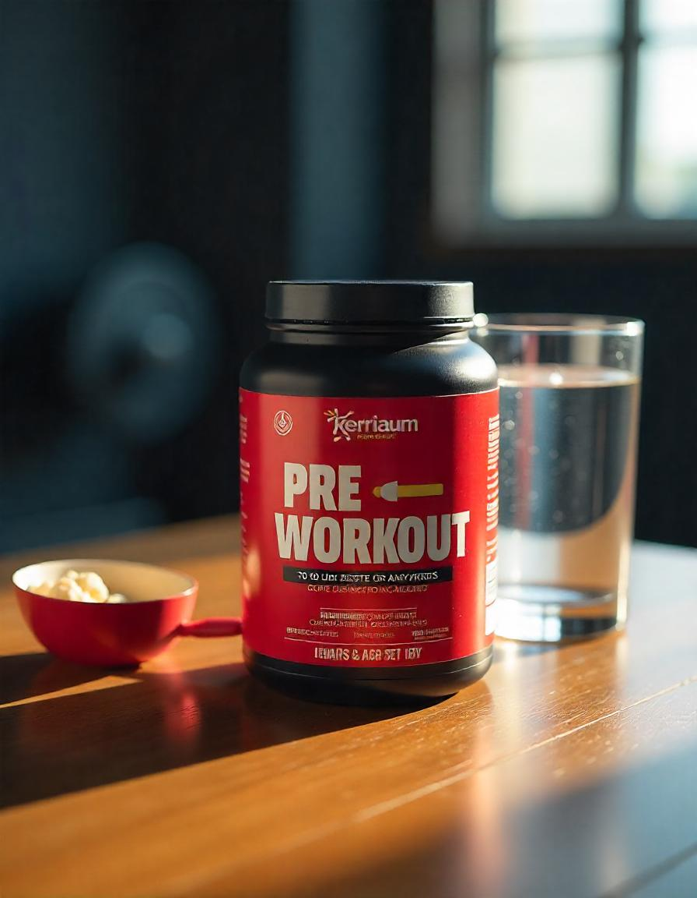

O pré-treino é um suplemento alimentício desenvolvido para melhorar o desempenho físico, aumentar a
energia e o foco durante os treinos. Combinando uma série de ingredientes que ajudam na performance, ele
é ideal para quem busca melhorar seus resultados nas atividades físicas.
Benefícios do Pré-Treino:
- Aumenta a energia e disposição para os treinos, ajudando a combater a fadiga.
- Melhora o foco e a concentração, permitindo maior intensidade durante o exercício.
- Auxilia na melhoria da resistência física, permitindo realizar treinos mais longos e intensos.
- Potencializa o desempenho durante atividades de alta intensidade, como musculação, crossfit e
esportes de resistência.
- Facilita a liberação de gordura como fonte de energia, ajudando no emagrecimento.
Onde Encontrar o Pré-Treino
O pré-treino pode ser encontrado em diversas lojas especializadas em suplementos alimentares, como:
- Loja X - Rua das Suplementos, 123
- Farmácia Y - Avenida da Saúde, 456
- Online: Sites como Mercado Livre, Amazon e lojas especializadas em nutrição esportiva.
Como Tomar o Pré-Treino
A dosagem e a forma de tomar o pré-treino podem variar de acordo com a marca e a formulação do
suplemento. No entanto, a recomendação geral é:
- Consumir uma dose de 20 a 30 minutos antes do treino, para garantir a máxima absorção e efeito
durante o exercício.
- Seguir a dosagem indicada no rótulo do produto, pois o excesso pode causar efeitos adversos, como
agitação excessiva e insônia.
- Evitar o consumo de pré-treino à noite ou muito perto da hora de dormir, pois os ingredientes
estimulantes podem interferir no sono.
É sempre importante ler as instruções do fabricante e consultar um nutricionista ou médico antes de
iniciar o uso de qualquer suplemento.
Como é Produzido o Pré-Treino
O pré-treino é composto por uma combinação de ingredientes estimulantes e nutritivos, que auxiliam na
performance física. O processo de produção envolve:
- Seleção de ingredientes ativos como cafeína, creatina, beta-alanina, BCAAs, entre outros, para
potencializar o efeito no desempenho físico.
- Formulação e mistura de ingredientes que aumentam a energia, a resistência e o foco durante o
treino.
- Processamento e encapsulamento ou embalagem do suplemento em pó ou cápsulas.
- Testes de qualidade para garantir que o suplemento tenha a dose correta dos ingredientes e seja
livre de contaminantes.
Esse processo de fabricação garante que o produto final seja eficaz, seguro e de alta qualidade para os
consumidores.